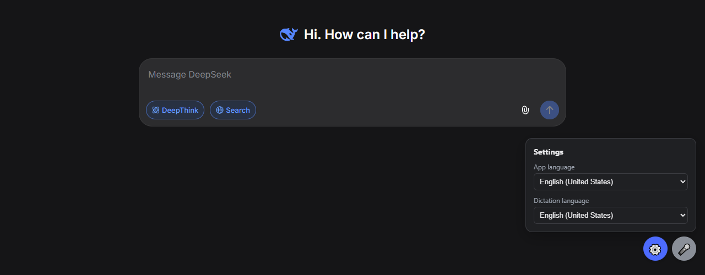

DeepSeek for Windows*
Open-source app for Windows 10 and 11.
Windows 10/11 · uses Microsoft Edge, already built into Windows · MIT license

Why this app
Its own window
No browser tabs or address bar. DeepSeek opens like any Windows program, with its own icon on the taskbar.
Everything in one folder
The launcher, settings and your login live in one portable folder. Your regular browser isn't touched.
88 interface languages
Switch DeepSeek's interface to any of its languages from the settings panel.
Voice input, if you want it
Dictate a message with the mic button or Ctrl+Space in 50+ languages.
Install
- Download
DeepSeek-portable.zipfrom Releases. - Unzip it to a permanent place, for example
C:\DeepSeek. - Run
DeepSeek.exe. A DeepSeek shortcut appears next to it: just drag it to your Desktop. - Sign in to your DeepSeek account.
If Windows says "Windows protected your PC", click "More info" → "Run anyway". The exe isn't signed with a paid certificate; see Transparency below.
Transparency
- All code is open: the launcher (
DeepSeek.cs, about 70 lines) and a small Edge extension. DeepSeek.exeis built by GitHub Actions from the public source, not on the author's computer. Build logs are public.- Every release has SHA-256 checksums and a GitHub provenance attestation:
gh attestation verify DeepSeek.exe -R ishimuraxxx-ai/deepseek-1.0.1 - No telemetry. The app talks only to DeepSeek.
FAQ
Is there an official DeepSeek desktop app for Windows?
No (as of September 2026). DeepSeek offers the website chat.deepseek.com and mobile apps. The Microsoft Store listing named DeepSeek is only the Android app for the China region, and it doesn't run on Windows 10. This project is an unofficial open-source alternative: the official website in its own window.
How do I install DeepSeek on a Windows 10 or 11 PC?
Download DeepSeek-portable.zip from Releases, unzip it and run DeepSeek.exe. A DeepSeek shortcut appears next to it: drag it to your Desktop.
Is it safe?
All code is open, and the exe is built publicly by GitHub Actions with checksums and a provenance attestation. The app collects no data and keeps your login only in its own folder.
How do I change DeepSeek's interface language?
Open ⚙️ settings → "App language". All 88 languages of the site are available.
Why does the DeepSeek captcha keep failing?
Usually because of a VPN. Turn it off while signing in or exclude deepseek.com, fengkongcloud.com, fengkongcloud.cn and awswaf.com from the VPN.
Does it work on macOS or Linux?
No, only Windows 10/11 with Microsoft Edge.